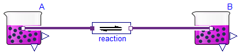
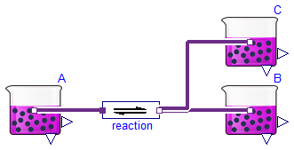
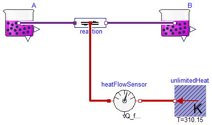
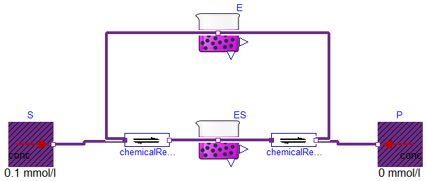

Examples that demonstrate usage of the Pressure flow components
Information
Extends from Modelica.Icons.ExamplesPackage (Icon for packages containing runnable examples).
Package Content

Information
Extends from Modelica.Icons.Example (Icon for runnable examples).
Modelica definition

Information
Extends from Modelica.Icons.Example (Icon for runnable examples).
Modelica definition

Information
Extends from Modelica.Icons.Example (Icon for runnable examples).
Modelica definition
Basic enzyme kinetics

Information
Extends from Modelica.Icons.Example (Icon for runnable examples), SteadyStates.Interfaces.SteadyStateSystem (Global abstract class, for additional global state equations).
Parameters
| Type | Name | Default | Description |
|---|
| AmountOfSubstance | tE | 0.01 | total amount of enzyme [mol] |
| Real | k_cat | 1 | forward rate of second reaction [1/s] |
| Concentration | Km | 0.1 | Michaelis constant = substrate concentration at rate of half Vmax [mol/m3] |
| Simulation |
| Simulation type |
| SimulationType | Simulation | Types.SimulationType.SteadyS... | Dynamic with Initialization or Steady State |
| Equilibrium |
| Integer | NumberOfDependentStates | 1 | Number of additional steady state equation of the system |
Modelica definition
model MichaelisMenten
"Basic enzyme kinetics"
import Physiolibrary;
extends Modelica.Icons.Example;
extends SteadyStates.Interfaces.SteadyStateSystem(
Simulation=Types.SimulationType.SteadyState);
Physiolibrary.Chemical.Sources.UnlimitedSolutionStorage P(Conc=0);
Physiolibrary.Chemical.Sources.UnlimitedSolutionStorage S(Conc=0.1);
parameter Types.AmountOfSubstance tE=0.01
"total amount of enzyme";
parameter Real k_cat(unit="1/s", displayUnit="1/min")= 1
"forward rate of second reaction";
parameter Types.Concentration Km = 0.1
"Michaelis constant = substrate concentration at rate of half Vmax";
Physiolibrary.Chemical.Components.Substance ES(solute_start=0, Simulation=
Types.SimulationType.SteadyState);
Physiolibrary.Chemical.Components.Substance E(
solute_start=tE,
isDependent=true,
Simulation=Types.SimulationType.SteadyState);
Components.ChemicalReaction
chemicalReaction(nS=2,
K=2/Km,
kf=2*k_cat/Km);
Components.ChemicalReaction
chemicalReaction1(nP=2,
K=Modelica.Constants.inf,
kf=k_cat);
// Real v(unit="mol/s", displayUnit="mmol/min") "test of MM equation";
equation
normalizedState[1]*tE = E.solute + ES.solute;
//Michaelis-Menton: v=((E.q_out.conc + ES.q_out.conc)*k_cat)*S.concentration/(Km+S.concentration);
connect(S.q_out, chemicalReaction.substrates[1]);
connect(chemicalReaction1.products[1], P.q_out);
connect(E.q_out, chemicalReaction.substrates[2]);
connect(E.q_out, chemicalReaction1.products[2]);
connect(chemicalReaction.products[1], ES.q_out);
connect(ES.q_out, chemicalReaction1.substrates[1]);
end MichaelisMenten;
Automatically generated Tue Sep 15 22:55:15 2015.
 Physiolibrary.Chemical.Examples.SimpleReaction
Physiolibrary.Chemical.Examples.SimpleReaction